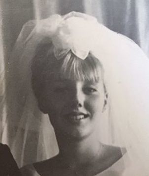
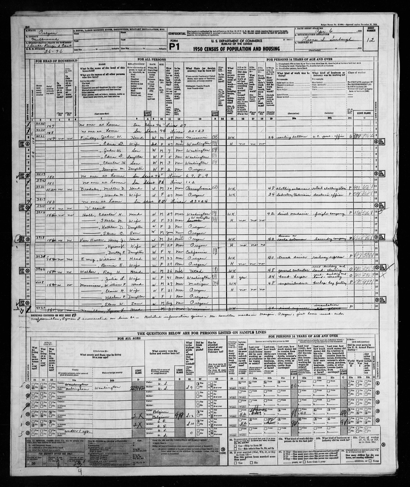

Kathleen Diane Hall b. 1947
Peter's mother.
Living. As for every living relative on this site, the birth date is given by year only, and no current address is shown.
Also recorded as Kathleen Diane Hall (married name Danenberg).
Kathleen Diane Hall was born in 1947 in Portland, Multnomah County, Oregon, United States2,3,4, the daughter of Charles Henry Hall and Estella May Alderson64,65,66. She married Peter Valentins Danenbergs on 23 Apr 1966 in Los Angeles, California, United States67,68,69.
From her company-bio:Kathy Danenberg has been the Chief Executive Officer for Response Genetics, Inc. since 2002 . . . . While at USC, Kathy Danenberg invented a breakthrough patented method to extract RNA from formalin-fixed paraffin embedded tissue specimens which became the basis for the establishment of Response Genetics, Inc. Kathy Danenberg’s research on the kinetic mechanism of thymidylate synthase provided the rationale for use of the 5-FU-leucovorin combination in colorectal cancer.
Family
- Parents
- Charles Henry Hall 1920–2001 and Estella May Alderson 1916–2008 documented
- Husband
- Peter Valentins Danenbergs b. 1942 · married on 23 Apr 1966 in Los Angeles, California, United States67,68,69
- Children
- Liga Irene Danenberg b. 1966 documented
- Peter Charles Danenberg Jr. b. 1978 documented
Life events
| Event | Date | Place and details |
|---|---|---|
| Born | 1947 | Portland, Multnomah County, Oregon, United States2,3,4 |
| Lived | 6 Apr 1950 | Portland, Multnomah County, Oregon, United States5,6 |
| Lived | Jun 1950 | Portland, Multnomah County, Oregon, United States7 |
| Lived | bet 8 Nov 1960 and 6 Nov 1962 | Los Angeles, California, United States8 |
| Lived | bet 1966 and 1970 | Santa Barbara, California, United States9 |
| Married | 23 Apr 1966 | with Peter Valentins Danenbergs Los Angeles, California, United States67,68,69 |
| Work | bet Apr 1973 and Jan 1975 | Madison, Wisconsin, United States Biochemical researcher at the University of Wisconsin–Madison, working with Henry C. Pitot on rat-liver tyrosine aminotransferase (1973) and with enzyme kineticist W. W. Cleland to elucidate the kinetic mechanism of yeast hexokinase (1975)18 |
| Note | bet Apr 1973 and Apr 2024 | Los Angeles, California, United States Author or co-author of 193 peer-reviewed biomedical papers indexed in PubMed under 'Danenberg K[Author]' between April 1973 and April 2024 (126 under 'Danenberg KD', 66 under 'Danenberg K' without a middle initial, and 1 under 'Danenberg KL' [PMID 21460848]); first author on 4 papers (1975, 1979,…38 |
| Lived | 1977 | Glendale, California, United States10 |
| Note | bet 1977 and 1978 | Los Angeles, California, United States She was publishing science with Peter from the 1970s, twenty years before she founded Response Genetics: Danenberg PV, Danenberg KD, "Inhibition of hexokinase by multisubstrate analogs", Biochimica et Biophysica Acta 473 (1977); and Danenberg PV, Danenberg KD, Biochemistry 17 (1978), 4018–4024.…39 |
| Note | bet Sep 1978 and Jun 1979 | Los Angeles, California, United States Co-discovered the ordered kinetic mechanism and sequential subunit interaction of thymidylate synthetase with Peter V. Danenberg, demonstrating how 5,10-methylenetetrahydrofolate stabilizes the inhibitory FdUMP–enzyme complex and providing the biochemical rationale for combining 5-fluorouracil…40 |
| Work | bet 1985 and 2000 | Los Angeles, California, United States Laboratory Director, University of Southern California, 1985–2000 — fifteen years. In her own words: 'Development of advanced oncology laboratory testing. Managed lab operation for research grants, patents and publications.' This is the USC laboratory in which the FFPE RNA extraction method was…19 |
| Lived | bet 1987 and 2020 | La Cañada Flintridge, California, United States11,12 |
| Lived | 1 Jan 1988 | Pasadena, California, United States According to an online family tree13 |
| Note | bet 1988 and 2024 | 126 publications indexed in PubMed under 'Danenberg KD'. Response Genetics' 2008 proxy credits her with 'over 100 scientific publications'. Many are co-authored with her husband; the pair 'Danenberg, K., Danenberg, P.' is a standing citation in the quantitative-PCR literature.41 |
| Note | bet 8 Aug 1989 and 16 Dec 1994 | Los Angeles, California, United States Senior author of the 1989 Biochemistry and 1990 Cancer Research studies demonstrating that 5-fluorouracil (5-FU) incorporation into RNA alters Tetrahymena rRNA self-splicing, and co-author with Heinz-Josef Lenz, D. J. Manno, and Peter V. Danenberg of the December 1994 Journal of Biological…42 |
| Note | bet 7 Dec 1992 and 11 Jul 2024 | Los Angeles, California, United States Named inventor on 53 patent publications indexed under 'Kathleen Danenberg' on Google Patents spanning 1992–2024 (extending beyond the 2000–2013 filings indexed under 'Kathleen D. Danenberg'), including WO1993011266A1 (filed 7 Dec 1992, Sloan-Kettering Institute / USC, RNA conformation…43 |
| Work | bet 1999 and 2011 | Los Angeles, California, United States Founder, director, and from 2002 Chief Executive Officer of Response Genetics, Inc., Los Angeles (NASDAQ: RGDX). Her own account of the arc: 'Founded Response Genetics, Inc. (RGI) in 1999 with private funding, and incorporated licensed technology we had developed at USC for isolation of RNA from…20 |
| Work | bet 1999 and 2003 | Los Angeles, California, United States Credited in Dr. Reginald V. N. Lord's 2003 University of New South Wales Doctor of Medicine thesis as having optimized the quantitative gene-expression laboratory methods and co-supervised seven USC studies on Barrett's esophagus and esophageal adenocarcinoma (2000–2003), and as the driving force…21 |
| Note | bet 1999 and 2000 | Los Angeles, California, United States The invention her career turns on. With her husband Peter V. Danenberg and Stephen (Steven) Swenson, she devised a way to get usable RNA out of formalin-fixed, paraffin-embedded tissue — the way hospital pathology archives store tumour samples. Until then RNA could only be had from fresh-frozen…44 |
| Note | bet Sep 1999 and Jun 2007 | Los Angeles, California, United States Co-founded Response Genetics, Inc. (originally incorporated in Delaware in September 1999 as Bio Type, Inc., renamed Response Genetics, Inc. in August 2000); the company held the U.S. registered trademarks 'Danenberg Tumor Profile' and 'DTP' and maintained a $7 million key-person life insurance…45 |
| Note | bet 2000 and 2013 | 39 patent documents name her as inventor on Google Patents, across US, European, Australian, Japanese, New Zealand, Canadian, Hong Kong and Chinese filings. The granted US ones: US 6,518,416 B1 (RNA from FFPE tissue, Response Genetics, issued 11 Feb 2003); US 6,573,052 B2 and US 6,602,670 B2…46 |
| Note | 16 Mar 2001 | Santa Ana, California, United States Named as surviving daughter 'Kathleen Danenberg' in the 16 March 2001 Orange County Register obituary of her father Charles Henry Hall (died 9 March 2001, age 80, Maintenance Manager, of Newport Coast, CA), alongside his wife Stella, daughter Susan Hall, and sons a DNA match, Dale, Charles, and…47 |
| Note | bet 2005 and 2011 | Los Angeles, California, United States Received inventor's share of patent royalties from the University of Southern California under USC's exclusive license of the RGI-1 FFPE RNA extraction patent (U.S. Patent 6,248,535) to Response Genetics, Inc.: $41,533 (2005), $18,574 (2006), $34,658 (2007), $29,993 (2008), $57,964 due / $5,465…48 |
| Work | bet 2006 and 2011 | Los Angeles, California, United States Total annual executive compensation as President and CEO (and in 2011 Executive Scientific and Technology Officer) of Response Genetics, Inc.: $1,257,700 in 2006 ($354,000 salary and $903,700 in contract-origination bonuses triggered by the January 2006 GSK and December 2006 GSK Bio agreements),…22 |
| Note | 6 Jun 2007 | Los Angeles, California, United States Age 60 in the table of executive officers and directors of Response Genetics, Inc.'s IPO prospectus, dated 6 June 2007. That puts her birth between June 1946 and June 1947 and so agrees with the 1947 we already hold. It is the strongest public, legally-responsible statement of her age…49 |
| Work | bet 2 Jul 2007 and 20 Jul 2007 | Scotland Announced on 2 July 2007 the opening of Response Genetics, Inc.'s European laboratory in Edinburgh, Scotland, doubling the company's clinical-trial genetic analysis capacity ('We are excited to expand our laboratory presence into Europe with the opening of our Edinburgh facility'); and delivered…23 |
| Lived | bet 2008 and 2012 | Altadena, California, United States14,15 |
| Note | 6 May 2008 | Named as husband and wife (joint owners of Response Genetics shares)50 |
| Note | 2009 | Los Angeles, California, United States Honored with the 2009 Dr. Fred Marcus 'Simply the Best' Award presented by Bonnie J. Addario at the Simply the Best Gala ('2009: Kathy Danenberg — Response Genetics, Inc., Los Angeles, CA'), recognizing outstanding performance in the fight to end lung cancer51 |
| Work | bet 5 Jan 2009 and 22 Jan 2011 | Los Angeles, California, United States Announced on 5 January 2009 an amended and restated two-year master service agreement naming Response Genetics as preferred provider of genetic testing services to GlaxoSmithKline, Ltd. (with a $1.3 million upfront payment), and represented Response Genetics as Founder, President, and CEO at the…24 |
| Note | bet 2010 and Oct 2011 | Los Angeles, California, United States Disclosed in Response Genetics' related-party proxy statements as the mother of RGI IT Director Liga Danenberg (employed until October 2011; paid $107,685 in 2010 and $159,722 in 2011) and RGI Software Architect Peter Danenberg (offered position of Senior Software Architect in late July 2010; paid…52 |
| Note | bet 2010 and 19 Oct 2011 | Texas, United States Recipient of the 2010 'Simply the Best' award from the Bonnie J. Addario Lung Cancer Foundation; announced on 19 October 2011 by Caris Life Sciences, Inc. as joining its executive team in the newly created role of Senior Vice President, Professional Affairs after scaling Response Genetics to an…53 |
| Note | bet 15 Mar 2010 and 16 Sep 2010 | Los Angeles, California, United States Led Response Genetics' board nomination negotiations during the 2010 proxy contest initiated by 18.3% stockholder Special Situations Funds (SSF, which Chairman Tom DeMeester joined on a dissident slate on 17 March 2010); concluded a Settlement Agreement on 16 September 2010 expanding the board to…54 |
| Note | 4 Feb 2011 | Los Angeles, California, United States Christine Meda was appointed President of Response Genetics effective 4 February 2011; Kathleen, who had held that title, continued as Chief Executive Officer. She signed the 8-K reporting it.55 |
| Note | 22 Jul 2011 | Los Angeles, California, United States She stepped down as CEO of Response Genetics on 22 July 2011 and the board appointed her 'Founder and Executive Scientific and Technology Officer', to go back to the science. The chairman, Kirk K. Calhoun: 'We are very grateful for Kathleen Danenberg's leadership and acknowledge her numerous…56 |
| Work | 25 Jul 2011 | Los Angeles, California, United States Quoted in the Los Angeles Business Journal upon stepping back from the CEO role at Response Genetics on 25 July 2011 to become Executive Scientific and Technology Officer: 'This transition will allow me to spend most of my time on developing new diagnostic technologies while refining our present…25 |
| Work | 26 Jul 2011 | Los Angeles, California, United States Featured as 'Kathleen Danenberg: CEO' on Response Genetics, Inc.'s official website (http://www.responsegenetics.com/about, archived 26 July 2011), noting that she 'designed and carried out experiments demonstrating that 5-FU could alter RNA splicing and developed methods for using the polymerase…26 |
| Work | 23 Sep 2011 | Los Angeles, California, United States Resigned as a member of the Board of Directors and as Executive Scientific and Technology Officer of Response Genetics, Inc. on 23 September 2011 (ceasing Section 16 insider status effective 7 October 2011, while retaining beneficial ownership of 764,904 shares / 3.8% jointly with Peter Danenberg…27 |
| Work | bet Oct 2011 and Aug 2012 | Arizona, United States Senior Vice President, Professional Affairs, Caris Life Sciences, Phoenix, Arizona, October 2011 – August 2012. Her description: 'Facilitator and Architect of a series of new oncology testing panels. Professional liaison to molecular biology industry leaders.'28 |
| Work | bet Aug 2012 and Nov 2014 | California, United States Consultant to Life Technologies, Foster City, California, August 2012 – November 2014: 'Led core team in validation and product development of molecular tests from FFPE tissue predictive of response to chemotherapy. DNA and RNA sequence analysis of certain FFPE tissues using PCR technology led to…29 |
| Work | bet Nov 2013 and Mar 2017 | Torrance, California, United States Her second company. Founder, President, CEO and Director of Liquid Genomics, Inc., founded November 2013 — 'a blood-based biomarker Company … molecular analysis of cell-free DNA and RNA biomarkers in the blood of cancer patients to assess resistance and sensitivity to targeted chemotherapies over…30 |
| Work | bet 20 May 2014 and 18 Jan 2017 | Torrance, California, United States As Chief Executive Officer and Director of Liquid Genomics, Inc. (SEC CIK 0001609810, incorporated in Delaware in 2013; 1725 Del Amo Blvd., Torrance, CA 90501; tel. 626-893-4123), signed SEC Form D filings reporting $3,236,914 raised in a May 2014 seed offering (with fellow officers/directors…31 |
| Work | 2015 | Torrance, California, United States Operated Liquid Genomics, Inc.'s CLIA-registered molecular diagnostics laboratory at 1725 Del Amo Blvd., Torrance, CA 9050132 |
| Work | bet May 2015 and 21 Oct 2016 | Torrance, California, United States Featured as Chief Executive Officer on Liquid Genomics, Inc.'s corporate website (http://liquidgenomics.com/, archived 21 October 2016; CLIA Certification No. 05D2026569, CAP Certification No. 9273968 / AU# 1761118; 1725 Del Amo Blvd., Torrance, CA 90501; tel. 310-320-4362 and 844-282-3DNA)…33 |
| Work | bet 31 Aug 2015 and Sep 2016 | Torrance, California, United States Led Liquid Genomics, Inc.'s 2015–2016 scientific and commercial rollout: established wholly owned European subsidiary Liquid Genomics GmbH on 31 August 2015 and leased laboratory space at the Bayer CoLaborator in Berlin on 2 October 2015; presented circulating cell-free RNA (cfRNA) studies on…34 |
| Work | bet 17 Sep 2015 and 18 Jul 2018 | Germany Managing Director (Geschäftsführer) of Liquid Genomics GmbH, Berlin, Germany (Amtsgericht Charlottenburg HRB 168031 B, EUID DEF1103R.HRB168031B; registered office at Müllerstr. 178, c/o Bayer Pharma AG, 13353 Berlin, with €25,000 share capital; originally formed 17 June 2015 as Blitz B15-361 GmbH…35 |
| Note | 30 Sep 2015 | New York City, New York, United States Maintains an academic profile on ResearchGate (https://www.researchgate.net/profile/Kathleen-Danenberg; 361 listed publications, 23,995 citations, listed as 'CEO at Liquid Genomics, Inc.') featuring a portrait photograph of Kathleen Danenberg speaking behind a lectern with blue 'NASDAQ' lettering…57 |
| Work | bet Mar 2017 and Jun 2021 | Culver City, California, United States Senior Vice President of Liquid Technologies, NantHealth, Inc., 9920 Jefferson Blvd., Culver City, California, March 2017 – June 2021. 'Upon the acquisition of Liquid Genomics by NantHealth, I led the team that transitioned Liquid Genomics' CAP/CLIA licensed lab from Torrance, CA to NantHealth's…36 |
| Note | bet 31 Mar 2017 and 5 Jul 2018 | Culver City, California, United States Sold Liquid Genomics, Inc. on 31 March 2017 to Patrick Soon-Shiong's NantCell, Inc. pursuant to an Agreement and Plan of Merger for $5,000,000 (499,987 shares of NantCell common stock valued at $4,999,870 plus $130 cash); Liquid Genomics was subsequently assigned to NantOmics, LLC on 31 July 2017…58 |
| Note | bet 12 Feb 2020 and 14 May 2024 | Altadena, California, United States Sole inventor of U.S. Patent 11,773,447 B2 (issued 3 October 2023, assigned to NantHealth Labs, Inc., formerly Liquid Genomics, Inc.) and European Patent EP 3 218 523 B1 (granted 12 February 2020), 'Use of circulating cell-free RNA for diagnosis and/or monitoring cancer' (priority 14 November…59 |
| Work | bet Jun 2021 and 2026 | Los Angeles, California, United States Senior Project Management Consultant to Burning Rock Dx (Burning Rock Biotech, Guangzhou), from June 2021 and still current at the date of this research — she is in her eightieth year and still working in molecular oncology. It is the headline on her profile.37 |
| Note | 9 Jun 2021 | Los Angeles, California, United States Public profile portrait photograph on LinkedIn (800×800 JPEG, uploaded 9 June 2021 per epoch timestamp 1623278044962 in the CDN asset path; archived at img/2021-06-09-linkedin-profile.jpg)60 |
| Note | bet 7 Jan 2025 and 8 Jan 2025 | Altadena, California, United States SHE AND PETER LOST THEIR ALTADENA HOUSE IN THE EATON FIRE of 7–8 January 2025 — [address omitted], the address on her own SEC filer record (CIK 0001401803) from 2007 to 2012 and in the family's MyHeritage data. Their daughter Līga set up a GoFundMe for them, "Help Danenberg's Rebuild after…61 |
| Lived | 2026 | Los Angeles, California, United States16 |
| Note | 2026 | How she describes her own working life, in her LinkedIn summary: 'Extensive global management experience and MDx development through long-term relationships with key oncology opinion leaders and their institutions… Established medical affairs personnel in the US, EU, Japan and China… Established a…62 |
| Education | Madison, Wisconsin, United States B.S. in biochemistry, University of Wisconsin–Madison. Her LinkedIn education section gives 'Bachelor of Science (BS), Biochemistry and Molecular Biology, University of Wisconsin-Madison' and it is her only listed degree; Response Genetics' proxy statement says the same in the formal register. No…17 | |
| Note | According to family memory63 |
Possible records (not confirmed)
Records that may concern her, but don't settle it: an initial and a surname only, a family recollection, or a reading that needs a second look. Each links to the record.
- Other 2021-04-16: Registered ORCID researcher identifier 0000-0002-2109-3205 under the name Kathleen Danenberg (created 16 April 2021)70 checker: raw/orcid-0000-0002-2109-3205.json contains only the name Kathleen Danenberg and creation timestamp 1618600738152 (2021-04-16), with empty works, employments, and addresses arrays; removed unsupported place and publication-link parenthetical and downgraded confidence to low.
- Occupation 1972/1973-04 Madison, Dane, Wisconsin, United States: Co-authored her earliest published biochemical research at the University of Wisconsin–Madison in 1972 with W. W. Cleland and M. I. Schimerlik (Fed. Proc. Am. Soc. Exp. Biol. 31:850, 1972), and had moved to a new department at the University of Wisconsin Medical School, Madison, WI by the April 1973 publication of her rat-liver tyrosine aminotransferase study with Henry C. Pitot71 checker: full-text article pages https://www.jbc.org/article/S0021-9258(19)43149-9/fulltext and https://febs.onlinelibrary.wiley.com/doi/10.1111/j.1432-1033.1973.tb02766.x were not saved because both jbc.org/sciencedirect.com and febs.onlinelibrary.wiley.com are gated behind Cloudflare challenge pages; saved Google Search index pages raw/google-search-jbc-1973-fed-proc.html (byte offset 584336) and raw/google-search-ejb-1973-address.html (byte offset 186696) alongside raw/pubmed-efetch-early-late.xml (byte offset 87579) and downgraded confidence to low.
Photographs


Records



Sources
- MyHeritage family tree 'Dzimta' of Peter's third cousin (his family site), member GEDCOM export of 26 Oct 2026, I500165 (person-6500165), GEDCOM lines 10189–10257.
NAME Kathleen Diane /Hall/ · _MARNM Danenberg
His record match: ASV Publisko Ierakstu Indekss, https://www.myheritage.lv/research/collection-10220/asv-publisko-ierakstu-indekss?itemId=745057547&action=showRecord: 'Kathleen D Danenberg'.
- 1950 US Census, Multnomah County, Oregon, ED 26-76, sheet 12, lines 15–18.
Kathleen Diane /Hall/ (voronins-tree.ged): 1 BIRT / 2 DATE 1947 … Kathleen D. Hall (6KMM-J567): Race = W; Birth 1947 @ Oregon; Census June 1950 @ Multnomah, Multnomah, Oregon, United States; Residence 1949; RelationshipToHead=Daughter; Age=3
Born 1947 in Portland, Multnomah County, Oregon to Charles Henry Hall and Estella May Alderson (1947 in voronins-tree.ged); enumerated at age 3 (born in Oregon) with her parents and younger brother Steven C. Hall (age 0, born June 1949 in Oregon) in Multnomah County, Oregon in the June 1950 US census.
- Ancestry.com, U.S., Public Records Index, 1950–1993, Volume 2 (Collection 1732, record 168912981).
Name: Kathleen D Danenberg | Birth Date: 1947 | Address: [address omitted] | Residence Place: Flintridge, California, USA | Zip Code: 91011-3713
Born 1947 (recorded as 'Kathleen D Danenberg, Birth Date: 1947' in U.S. Public Records Index Volume 2, and '1947' in Volume 1 and the 1994–2019 index)
- MyHeritage family tree 'Dzimta' of Peter's third cousin (his family site), member GEDCOM export of 26 Oct 2026, I500165 (person-6500165), GEDCOM lines 10189–10257.
BIRT · 1947
His record match: ASV Publisko Ierakstu Indekss, https://www.myheritage.lv/research/collection-10220/asv-publisko-ierakstu-indekss?itemId=129366167&action=showRecord: 'Kathleen Diane Danenberg | Dzimšana: 1947'. His record match: Kalifornija Dzimšanas, 1905 - 1995, https://www.myheritage.lv/research/collection-10070/dzim%C5%A1anas-ieraksti?itemId=13985481&action=showRecord: 'Hall | Dzimums: Vīrietis | Dzimšana: 1978 - Los Angeles, California, USA | Mātes pirmslaulības uzvārds: Hall'.
- 1950 US Census, Multnomah County, Oregon, ED 26-76, sheet 12, line 17.
—, Kathleen D. | Daughter | W | F | 3 | Nev | Oregon
1950 US Census (enumerated 6 April 1950, Multnomah County, Oregon, ED 26-76, sheet 12, line 17, at [address omitted]): Kathleen D. Hall, daughter, age 3, born Oregon, in the household of her parents Charles H. and Stella M. Hall with brother Steven C. Hall (born June 1949).
- 1950 US Census, Multnomah County, Oregon, ED 26-76, sheet 12, line 17, DigitalFilmNbr 108805908, ImageNbr 13, ImageFolder1950Census 43290879-Oregon-017326, SourcePageNbr 12, SourceLineNbr 17, HouseholdId 155.
Name: Kathleen D. Hall (Kathleen D Hall); RelationshipToHead: Daughter; Gender: Female; Race: W; Age: 3 / 3 years; MaritalStatus: Single; Birth: 1947, Oregon; Census: June 1950, Multnomah, Multnomah, Oregon, United States; SourcePageNbr: 12; SourceLineNbr: 17; HouseholdId: 155
Enumerated (original enumeration date 'Apri 6, 1950' (FamilySearch normalizes it to June 1950), house number [address omitted], ED 26-76) on sheet 12, line 17, household 155, as Daughter, Female, race W, age 3, Single, born c. 1947 in Oregon, in household of parents Charles H. Hall (29) and Steela M. Hall (33) and brother Steven C. Hall (0 days).
- 1950 US Census, Multnomah County, Oregon, ED 26-76, sheet 12, lines 15–18.
Kathleen D. Hall: Birth 1947 @ Oregon; Census June 1950 @ Multnomah, Multnomah, Oregon, United States; RelationshipToHead=Daughter; Age=3
1950 US census, Multnomah County, Oregon: Kathleen D. Hall, age 3, born Oregon, living with her parents Charles H. Hall (29, diesel mechanic) and Steela M. Hall (33) and younger brother Steven C. Hall (born June 1949).
- California State Library, Index to Register of Voters, Los Angeles County, California — West Covina Precinct 76 (8 November 1960, image losangelescounty_146-00139; and 6 November 1962, image losangelescounty_167-00511), via Ancestry.com Collection 61066, records 41587610, 41587612, 63305379, and 63305380.
INDEX TO REGISTER OF VOTERS, LOS ANGELES COUNTY, CALIFORNIA — WEST COVINA PRECINCT 76, NOV 8 1960: HALL CHARLES H, 931 W SPRUCE ST, D | HALL MRS STELLA M, 931 W SPRUCE ST, D [losangelescounty_146-00139] / WEST COVINA PRECINCT 76, NOV 6 1962: HALL CHARLES H, 931 W SPRUCE ST, D | HALL MRS STELLA M, 931 W SPRUCE ST, D [losangelescounty_167-00511].
Childhood and teenage family home of her parents Charles H. Hall and Mrs. Stella M. Hall at [address omitted], West Covina, Los Angeles County, California (West Covina Precinct 76; recorded on the 8 November 1960 and 6 November 1962 Los Angeles County Registers of Voters when Kathleen Diane Hall was 13–15 years old)
- Danenbergs, Pēteris Valentīns — UC Santa Barbara (1966–1970) & birth of Līga Irene Danenberg in Santa Barbara (1966).
Kalifornijas U Santa Barbarā pētn. asist. 1966-70 … un Kalifornijas U Santa Barbarā ar Dr. grādu bioorganiskajā ķīm. 1970 … Location: Los Angeles, California — Current city. Hometown: Santa Barbara, California. Birthday: [day omitted] … 1 NAME Liga Irene /Danenberg/ / 1 BIRT / 2 DATE 1966
Lived in Santa Barbara, California with her husband Peter Valentins Danenbergs during his doctoral studies in bioorganic chemistry at the University of California, Santa Barbara (1966–1970); their daughter Līga Irene Danenberg was born in Santa Barbara on 1966.
- Glendale, California, City Directory, 1977, p. 108 (alphabetical directory, image 32701_1521003235_0217-00235) and p. 256 (street guide, image 32701_1521003235_0217-00909), via Ancestry.com U.S., City Directories, 1822–1995 (Collection 2469, records 3524549111 and 3524887279).
p. 108: Danenberg Peter & Kathleen [address omitted] / p. 256 (ST ELIZABETH RD — FROM 3600 BLK FIGUEROA ST WEST THEN SOUTH — ZIP CODE 91206): [address omitted] ★ Danenberg Peter ⊛
Resided as homeowners with husband Peter Danenberg at [address omitted], Glendale, CA 91206 in 1977 (immediately following their 1976 move from the University of Wisconsin–Madison to USC; listed in the 1977 Glendale City Directory alphabetical section on p. 108 as 'Danenberg Peter & Kathleen h[address omitted]' and in the street guide on p. 256 with the new-listing star '[address omitted] ★ Danenberg Peter ⊛')
- Ancestry.com, U.S., Public Records Index, 1950–1993, Volume 2 (Collection 1732, record 168912981).
Name: Kathleen D Danenberg [Kathleen Danenberg] | Birth Date: 1947 | Address: [address omitted], LA Canada, CA 91011-3713 | Second Residence Date: 1988, Second Address: [address omitted], Pasadena, CA 91101-3903 | Third Residence Date: 1993, Third Address: [address omitted], Altadena, CA 91001-1527 [1788/409441446] / Name: Peter V Danenberg | Birth Date: 1942 | Residence Date: 1987, Address: [address omitted], Pasadena, CA 91101-3903 [1788/43888055] / Residence Date: 1990-2020, Address: [address omitted], Altadena, CA 91001 | Second Residence Date: 2011-2019, [address omitted], La Crescenta, CA 91214 | Third Residence Date: 2005-2016, [address omitted], Altadena, CA 91001 [62209/279855175]
Resided with husband Peter V. Danenberg at [address omitted], La Cañada Flintridge, CA 91011-3713; at [address omitted], Pasadena, CA 91101-3903 (recorded 1987 for Peter V. Danenberg and 1988 for Kathleen D. Danenberg); and at [address omitted], Altadena, CA 91001-1527 (recorded 1990–2020; also associated in the 1994–2019 public records index with [address omitted], Altadena, CA 91001 in 2005–2016 and [address omitted], La Crescenta, CA 91214 in 2011–2019)
- MyHeritage family tree 'Dzimta' of Peter's third cousin (his family site), member GEDCOM export of 26 Oct 2026, I500165 (person-6500165), GEDCOM lines 10189–10257.
RESI · [address omitted], La Canada, California 91011-3713, USA
- MyHeritage family tree 'Dzimta' of Peter's third cousin (his family site), member GEDCOM export of 26 Oct 2026, I500165 (person-6500165), GEDCOM lines 10189–10257.
RESI · 1 JAN 1988 · [address omitted], Pasadena, California 91101-3903, USA
- EDGAR filer record and filing history, 2007–2012.
"name": "Danenberg Kathleen", "addresses": {"mailing": {"street1": "[address omitted]", "city": "ALTADENA", "stateOrCountry": "CA", "zipCode": "91001"}}
[address omitted], Altadena, California 91001 — the mailing address on her own SEC filer record as a reporting owner (CIK 0001401803, 'Danenberg Kathleen'), under which she filed Forms 3 and 4 and Schedules 13G between 2007 and 2012. The same street address is in the family's MyHeritage data as one of her residences.
- MyHeritage family tree 'Dzimta' of Peter's third cousin (his family site), member GEDCOM export of 26 Oct 2026, I500165 (person-6500165), GEDCOM lines 10189–10257.
RESI · [address omitted], Altadena, California 91001-1527, USA
- Kathleen Danenberg — Senior Project Management Consultant.
"location": "Los Angeles, California, United States" … "contact_info": {"emails": ["[email omitted]"]} … "is_verified": true
'Los Angeles, California, United States' is the location on her own LinkedIn profile, which LinkedIn marks verified. Published contact email on the profile: [email omitted] — the family's own domain, which is also where Peter's 2015 site lived.
- Directors and executive officers — Kathleen Danenberg.
Prior to her work at USC, Ms. Danenberg received her B.S. in biochemistry from the University of Wisconsin.
B.S. in biochemistry, University of Wisconsin–Madison. Her LinkedIn education section gives 'Bachelor of Science (BS), Biochemistry and Molecular Biology, University of Wisconsin-Madison' and it is her only listed degree; Response Genetics' proxy statement says the same in the formal register. No year is published on either. This is also where she and Peter V. Danenberg overlap: he was at the McArdle Laboratory and the Wisconsin Clinical Cancer Center in Madison 1970–76, and they married in Los Angeles in 1966, so she was most likely a Madison student in those years.
- PubMed PMID 4145779.
Prior to her work at USC, Ms. Danenberg worked with the renowned enzyme kineticist Dr. W.W. Cleland at the University of Wisconsin to elucidate the mechanism of action of the enzyme hexokinase. [424B4 p. 65] / Danenberg KD, Cleland WW. Use of chromium-adenosine triphosphate and lyxose to elucidate the kinetic mechanism and coordination state of the nucleotide substrate for yeast hexokinase. Biochemistry. 1975 Jan 14;14(1):28-39. [PMID 1089014] / Iwasaki Y, Lamar C, Danenberg K, Pitot HC. Studies on the induction and repression of enzymes in rat liver. Characterization and metabolic regulation of multiple forms of tyrosine aminotransferase. Eur J Biochem. 1973 Apr;34(2):347-57. [PMID 4145779]
Biochemical researcher at the University of Wisconsin–Madison, working with Henry C. Pitot on rat-liver tyrosine aminotransferase (1973) and with enzyme kineticist W. W. Cleland to elucidate the kinetic mechanism of yeast hexokinase (1975)
- Laboratory Director, University of Southern California.
University of Southern California — Laboratory Director — Greater Los Angeles — Jan 1985 – Jan 2000 — Development of advanced oncology laboratory testing. Managed lab operation for research grants, patents and publications.
Laboratory Director, University of Southern California, 1985–2000 — fifteen years. In her own words: 'Development of advanced oncology laboratory testing. Managed lab operation for research grants, patents and publications.' This is the USC laboratory in which the FFPE RNA extraction method was invented.
- President and CEO (Founder and Director), Response Genetics, Inc..
Founded Response Genetics, Inc.(RGI) in 1999 with private funding, and incorporated licensed technology we had developed at USC for isolation of RNA from FFPE tissue. … Led RGI to a revenue run rate of approximately $30M/yr and close to profitability.
Founder, director, and from 2002 Chief Executive Officer of Response Genetics, Inc., Los Angeles (NASDAQ: RGDX). Her own account of the arc: 'Founded Response Genetics, Inc. (RGI) in 1999 with private funding, and incorporated licensed technology we had developed at USC for isolation of RNA from FFPE tissue. Developed, branded, and commercialized molecular diagnostics tests (ResponseDX®). Led RGI to a revenue run rate of approximately $30M/yr and close to profitability.' Milestones she lists by year: 1999 first RT-PCR tests for genes tied to chemotherapy response; 2000 a pharma-service model, with contracts from Sanofi/Aventis, Eli Lilly, Taiho, Amgen, OSI, Pfizer and GSK; 2002 appointed CEO; 2007 the NASDAQ IPO; 2008 the ResponseDX panels and a national sales force; 2011 over 20,000 patient samples tested for GSK in the MAGE-A3 vaccine and MEK/BRAF melanoma trials. A global network of laboratories in the US, EU, Japan and China; labs in Los Angeles and Edinburgh. The formal record agrees: board member since March 2000, Vice President and Chief Scientific Officer December 2000 – December 2002, CEO and President from 2002.
- Reginald Vincent Norrie Lord, 'Studies on Barrett's oesophagus and oesophageal adenocarcinoma' (M.D. thesis, University of New South Wales, October 2003), pp. v–vii.
The expression studies were supervised by Dr. Danenberg, his wife and technical assistant Mrs Kathleen Danenberg, and by me. ... The laboratory methods for the expression studies were optimised by Kathleen Danenberg. ... The study reported in paper 16 ['Hypermethylated APC DNA in Plasma and Prognosis of Patients With Esophageal Adenocarcinoma', JNCI 92(22):1805-1811, 15 Nov 2000] identifies a serum marker, APC promoter hypermethylation, which was specific for adenocarcinoma in the patients studied. ... This study was largely driven by the determination of Mrs. Kathleen Danenberg.
Credited in Dr. Reginald V. N. Lord's 2003 University of New South Wales Doctor of Medicine thesis as having optimized the quantitative gene-expression laboratory methods and co-supervised seven USC studies on Barrett's esophagus and esophageal adenocarcinoma (2000–2003), and as the driving force ('This study was largely driven by the determination of Mrs. Kathleen Danenberg') behind the November 2000 Journal of the National Cancer Institute study identifying hypermethylated APC circulating plasma DNA as a prognostic blood marker in esophageal adenocarcinoma (PMID 11078757)
- U.S. Securities and Exchange Commission, Response Genetics, Inc. (CIK 0001124608), Form 424B4 IPO Prospectus (filed 6 June 2007), pp. 5, 19, 61.
Summary Compensation Table — Kathleen Danenberg: 2006 Salary $354,000, Bonus $903,700, Total $1,257,700; 2007 Salary $350,000, Bonus $175,000, Stock Options $689,836, All Other $114,673, Total $1,329,509; 2008 Total $567,344; 2009 Total $590,582; 2010 Total $754,600; 2011 Salary $334,615, Bonus $186,000, Option Awards $118,800, All Other $133,592, Total $773,007.
Total annual executive compensation as President and CEO (and in 2011 Executive Scientific and Technology Officer) of Response Genetics, Inc.: $1,257,700 in 2006 ($354,000 salary and $903,700 in contract-origination bonuses triggered by the January 2006 GSK and December 2006 GSK Bio agreements), $1,329,509 in 2007 ($350,000 salary, $175,000 bonus, $689,836 option awards, $114,673 other), $567,344 in 2008, $590,582 in 2009, $754,600 in 2010, and $773,007 in 2011
- Response Genetics, Inc. Press Releases (archived by the Internet Archive Wayback Machine on 8 October 2007).
7 | 2 | 2007 — Response Genetics Opens European Laboratory for Genetic Analysis of Tumor Specimens [wayback-rgi_press_2007.html] / 'We are excited to expand our laboratory presence into Europe with the opening of our Edinburgh facility,' said Kathleen Danenberg, President and CEO of Response Genetics. 'The opening of this new facility is the first step towards implementing the corporate strategy to standardize genetic testing globally. We expect to continue this expansion with the opening of new laboratories in Asia.' [Technology Networks, 4 Jul 2007] / Response Genetics, Inc. today announced that Company President and Chief Executive Officer Kathleen Danenberg will speak about cancer biomarkers and highlight Company data in colorectal, lung and pancreatic cancer at the Twenty-Second Aspen Cancer Conference Satellite Meeting, New Frontiers In Clinical Oncology 2007, in Aspen, Colorado, on Friday, July 20, at 8:50 a.m. Mountain Daylight Time. [BioSpace, 19 Jul 2007]
Announced on 2 July 2007 the opening of Response Genetics, Inc.'s European laboratory in Edinburgh, Scotland, doubling the company's clinical-trial genetic analysis capacity ('We are excited to expand our laboratory presence into Europe with the opening of our Edinburgh facility'); and delivered an invited presentation on FFPE cancer biomarkers in colorectal, lung, and pancreatic cancer at the 22nd Aspen Cancer Conference Satellite Meeting (New Frontiers in Clinical Oncology 2007) in Aspen, Colorado on 20 July 2007
- BioSpace / Business Wire, 'Response Genetics, Inc. Signs Amendment to Its Master Service Agreement With GlaxoSmithKline as Preferred Provider of Genetic Testing Services' (5 January 2009).
'We are very pleased to continue supporting GlaxoSmithKline's clinical trial development program,' said Kathleen Danenberg, Response Genetics' president and CEO. 'Our collaborative relationship underscores the value our service and patented technology brings to pharmaceutical partners like GlaxoSmithKline, in helping them develop new cancer-fighting therapies.' [BioSpace, 5 Jan 2009] / Response Genetics, Inc. (Nasdaq: RGDX), a company focused on the development and sale of molecular diagnostic tests for cancer, announced today that company founder, CEO and president, Kathleen Danenberg, will present at the 2011 Gastrointestinal Cancers Symposium in San Francisco, January 20-22. [BioSpace, 20 Jan 2011]
Announced on 5 January 2009 an amended and restated two-year master service agreement naming Response Genetics as preferred provider of genetic testing services to GlaxoSmithKline, Ltd. (with a $1.3 million upfront payment), and represented Response Genetics as Founder, President, and CEO at the 2011 Gastrointestinal Cancers Symposium in San Francisco (20–22 January 2011)
- Los Angeles Business Journal, 'Response Genetics Founder Steps Back from CEO Role' (25 July 2011).
Response Genetics Inc. Chief Executive Kathleen Danenberg has resigned to focus on research and development at the company she helped found in 1999, the biotech announced Monday. ... 'This transition will allow me to spend most of my time on developing new diagnostic technologies while refining our present products,' she said in a statement. ... Danenberg's 'patented research breakthroughs have been instrumental in making RGI what it is today,' Chairman Kirk K. Calhoun said in statement.
Quoted in the Los Angeles Business Journal upon stepping back from the CEO role at Response Genetics on 25 July 2011 to become Executive Scientific and Technology Officer: 'This transition will allow me to spend most of my time on developing new diagnostic technologies while refining our present products'
- Response Genetics, Inc., 'Company — Executive Management: Kathleen Danenberg: CEO'.
Kathleen Danenberg: CEO — Kathy Danenberg has been the Chief Executive Officer for Response Genetics, Inc. since 2002. ... While at USC, Ms. Danenberg invented a breakthrough patented method to extract RNA from formalin-fixed paraffin embedded tissue specimens which became the basis for the establishment of Response Genetics, Inc. , Ms. Danenberg's research on the kinetic mechanism of thymidylate synthase provided the rationale for use of the 5-FU-leucovorin combination in colorectal cancer. She designed and carried out experiments demonstrating that 5-FU could alter RNA splicing and developed methods for using the polymerase chain reaction to quantitatively measure gene expression levels in tumor tissues. Prior to her work at USC, Ms. Danenberg worked with the renowned enzyme kineticist Dr. W.W. Cleland at the University of Wisconsin to elucidate the mechanism of action of the enzyme hexokinase. ... She received a B.S. in Biochemistry from the University of Wisconsin.
Featured as 'Kathleen Danenberg: CEO' on Response Genetics, Inc.'s official website (http://www.responsegenetics.com/about, archived 26 July 2011), noting that she 'designed and carried out experiments demonstrating that 5-FU could alter RNA splicing and developed methods for using the polymerase chain reaction to quantitatively measure gene expression levels in tumor tissues' and worked prior to USC with enzyme kineticist Dr. W. W. Cleland at the University of Wisconsin on hexokinase
- U.S. Securities and Exchange Commission, Response Genetics, Inc. (CIK 0001124608), Form 424B4 IPO Prospectus (filed 6 June 2007), pp. 5, 19, 61.
On September 23, 2011, Kathleen Danenberg resigned as a member of the Board of Directors and as Executive Scientific and Technology Officer of Response Genetics, Inc. [Form 8-K, 27 Sep 2011] / Effective October 7, 2011, Kathleen Danenberg was no longer a director or executive officer of the issuer. [Form 4, 11 Jan 2012]
Resigned as a member of the Board of Directors and as Executive Scientific and Technology Officer of Response Genetics, Inc. on 23 September 2011 (ceasing Section 16 insider status effective 7 October 2011, while retaining beneficial ownership of 764,904 shares / 3.8% jointly with Peter Danenberg and via options)
- Senior Vice President, Professional Affairs — Caris Life Sciences.
Caris Life Sciences — Senior Vice President, Professional Affairs — Pheonix Arizona — Oct 2011 – Aug 2012
Senior Vice President, Professional Affairs, Caris Life Sciences, Phoenix, Arizona, October 2011 – August 2012. Her description: 'Facilitator and Architect of a series of new oncology testing panels. Professional liaison to molecular biology industry leaders.'
- Consultant — Life Technologies.
Life Technologies — Consultant — Foster City CA — Aug 2012 – Nov 2014
Consultant to Life Technologies, Foster City, California, August 2012 – November 2014: 'Led core team in validation and product development of molecular tests from FFPE tissue predictive of response to chemotherapy. DNA and RNA sequence analysis of certain FFPE tissues using PCR technology led to bridging and development of the Oncomine NGS panel.'
- President and CEO, Founder, Director — Liquid Genomics, Inc..
Liquid Genomics, Inc. a blood-based biomarker Company that was founded in November 2013. … Founded CLIA-registered lab in Torrance, CA. … European expansion: formed GmbH and leased lab in Berlin.
Her second company. Founder, President, CEO and Director of Liquid Genomics, Inc., founded November 2013 — 'a blood-based biomarker Company … molecular analysis of cell-free DNA and RNA biomarkers in the blood of cancer patients to assess resistance and sensitivity to targeted chemotherapies over time'. The milestones she lists: the first cell-free circulating tumour RNA extraction technology from ambient-temperature shipped blood; a patent filed on it; validated ctRNA and ctDNA assay panels; a CLIA-registered laboratory founded in Torrance, California; Medicare z-codes and a PTAN provider number; the Liquid GenomicsDx® tests for lung, colon, prostate and melanoma launched as an early-access programme; contracts with two large pharmaceutical companies; and a European arm — a GmbH formed and a laboratory leased in Berlin. The company was acquired by NantHealth in 2017.
- U.S. Securities and Exchange Commission, Liquid Genomics, Inc. (CIK 0001609810), Form D (filed 3 June 2014).
LIQUID GENOMICS, INC., 1725 DEL AMO BLVD., TORRANCE, CA 90501, (626) 893-4123 ... yearOfInc: 2013 ... Date of First Sale: 2014-05-20, Total Amount Sold: $3,236,914 ... Signature: /s/ Kathleen Danenberg, Chief Executive Officer, 2014-06-01 [Form D 2014] / Date of First Sale: 2016-06-13, Total Amount Sold: $1,627,346 (Series A Preferred Stock at $0.764131/share) ... Signature: /s/ Kathleen Danenberg, Chief Executive Officer, 2017-01-18 [Form D/A 2017]
As Chief Executive Officer and Director of Liquid Genomics, Inc. (SEC CIK 0001609810, incorporated in Delaware in 2013; 1725 Del Amo Blvd., Torrance, CA 90501; tel. 626-893-4123), signed SEC Form D filings reporting $3,236,914 raised in a May 2014 seed offering (with fellow officers/directors Jinliang Li, Eric Huang, Raj Maheshwari, George Yang, and Amy Wang) and $1,627,346 raised in a June 2016–January 2017 Series A Preferred Stock offering at $0.764131/share (with directors Raj Maheshwari, Amy Wang, Gilbert Samberg, and Malcolm MacLean IV)
- PubMed PMID 26722637.
Liquid Genomics, Inc., 1725 Del Amo Blvd. Torrance, Torrance, 90501 CA USA. [PMID 26722637] / Founded CLIA-registered lab in Torrance, CA. [LinkedIn profile]
Operated Liquid Genomics, Inc.'s CLIA-registered molecular diagnostics laboratory at 1725 Del Amo Blvd., Torrance, CA 90501
- Liquid Genomics, Inc. official website.
CLIA Certification Number: 05D2026569 | CAP Certification Number: 9273968/AU# 1761118 | Experienced Core Team — More than a decade working together in molecular diagnostics. Kathleen Danenberg, CEO: Founder and previous CEO of Response Genetics, Inc. (Nasdaq: RGDX), Kathleen Danenberg has unique experience in developing and commercializing panels of molecular diagnostic tests for cancer patients. Under her guidance, panels of lung, colon, gastric and melanoma cancer panels were developed and commercialized nationally. Clinical trials for pharmaceutical companies recruited patients using Response Genetics, Inc. assays globally. At the end of her tenure at RGDX, revenue had increased from zero to $30M/Y and was within $40K of profitability. Ms. Danenberg has more than 180 peer reviewed papers in the molecular diagnostics area and multiple patents and a proven track record in leading a public molecular diagnostics company. ... Liquid Genomics, 1725 Del Amo Blvd., Torrance, CA 90501, T +1 (310)-320-4362, T +1 (844)-282-3DNA (3362).
Featured as Chief Executive Officer on Liquid Genomics, Inc.'s corporate website (http://liquidgenomics.com/, archived 21 October 2016; CLIA Certification No. 05D2026569, CAP Certification No. 9273968 / AU# 1761118; 1725 Del Amo Blvd., Torrance, CA 90501; tel. [phone omitted] and 844-282-3DNA) alongside Medical Director Yahya Elshimali, M.D., VP of Quality/Regulatory Affairs Rama Tyagi, and VP of Business Development Scott Sandler, offering four blood-based ctDNA/ctRNA panels (LiquidGenomicsDx: Lung, Colon, Prostate, and Melanoma) and reporting that at the end of her tenure at RGDX 'revenue had increased from zero to $30M/Y and was within $40K of profitability'
- Liquid Genomics, Inc., 'News & Events'.
08.31.2015: Liquid Genomics, Inc. establishes wholly owned subsidiary, Liquid Genomics GmbH ... at the Bayer CoLaborator to support clinical trials in Europe. | 09.08.2015: Liquid Genomics presents two studies at IASLC ... in Denver, CO — P2.04-074 - PD-L1 Gene Expression and Total Cell-Free RNA Measured in Blood Positively Differentiate Healthy Individuals from Metastatic NSCLC Patients, K. Danenberg, A. Hoffmann, P.V. Danenberg, et al. | 09.16.2015: Liquid Genomics collaborates with USC and Dr. Jacek Pinski ... | 09.25.2015: Liquid Genomics presents ctRNA testing results in an oral presentation at ESMO 2015 in Vienna — Non-Invasive testing of gene expressions using cell-free RNA increases the chemotherapy target information generated from cell-free DNA testing, K. Danenberg, H.J. Lenz, et al. | 10.02.2015: Liquid Genomics GmbH leases lab space at the CoLaborator on Bayer Pharmaceutical Company property in Berlin, Germany | 11.01.2015: Formal Launch of LiquidGenomicsDx Laboratory Developed Tests | 03.21.2016: Liquid Genomics receives CAP Certification | 04.30.2016: Liquid Genomics collaborates with JACCRO ... | 06.03.2016: Liquid Genomics publishes three studies at ASCO 2016.
Led Liquid Genomics, Inc.'s 2015–2016 scientific and commercial rollout: established wholly owned European subsidiary Liquid Genomics GmbH on 31 August 2015 and leased laboratory space at the Bayer CoLaborator in Berlin on 2 October 2015; presented circulating cell-free RNA (cfRNA) studies on PD-L1 in non-small-cell lung cancer at IASLC in Denver (8 September 2015) and in an oral presentation at ESMO 2015 in Vienna (25 September 2015); launched clinical trial collaborations with Dr. Jacek Pinski at USC on prostate cancer AR splice variants (16 September 2015) and with the Japan Clinical Cancer Research Organization (JACCRO-13 trial, 30 April 2016); formally launched LiquidGenomicsDx qPCR laboratory-developed tests on 1 November 2015; received CAP accreditation (No. 9273968/AU# 1761118) on 21 March 2016; and published three plasma ctRNA/ctDNA studies at ASCO on 3 June 2016
- North Data European company register dossier for Liquid Genomics GmbH, Berlin (Amtsgericht Charlottenburg HRB 168031 B).
Name: Liquid Genomics GmbH (Blitz B15-361 GmbH) | Identifikation: Amtsgericht Charlottenburg (Berlin) HRB 168031 B, EUID DEF1103R.HRB168031B | Gegenstand: Die Bereitstellung von klinischen Labor- und Diagnostik-Dienstleistungen, die Forschung, um die Technologie zur Unterstützung der Diagnostik-Dienstleistungen zu entwickeln, sowie die Schaffung von Technologien für den Einsatz zur Unterstützung ihrer Diagnose-Services | 17.09.2015 - 18.07.2018 Geschäftsführer Kathleen Danenberg | 18.07.2018 - 19.07.2021 Liquidator Benjamin Simkin, Manhattan Beach, USA | 19.07.2021 Löschung.
Managing Director (Geschäftsführer) of Liquid Genomics GmbH, Berlin, Germany (Amtsgericht Charlottenburg HRB 168031 B, EUID DEF1103R.HRB168031B; registered office at Müllerstr. 178, c/o Bayer Pharma AG, 13353 Berlin, with €25,000 share capital; originally formed 17 June 2015 as Blitz B15-361 GmbH and renamed Liquid Genomics GmbH under articles amended 10 August 2015 and registered 17 September 2015; placed in liquidation on 18 July 2018 under liquidator Benjamin Simkin of Manhattan Beach, CA, when Kathleen Danenberg stepped down as Geschäftsführer, and dissolved on 19 July 2021)
- SVP of Liquid Technologies — NantHealth, Inc..
NantHealth, Inc. — SVP of LIquid Technologies — [address omitted] — Mar 2017 – Jun 2021
Senior Vice President of Liquid Technologies, NantHealth, Inc., 9920 Jefferson Blvd., Culver City, California, March 2017 – June 2021. 'Upon the acquisition of Liquid Genomics by NantHealth, I led the team that transitioned Liquid Genomics' CAP/CLIA licensed lab from Torrance, CA to NantHealth's premises in Culver City. We expanded the Liquid Biopsy commercial panel and participated in regulatory submissions… filed patents and reported results of initial clinical utility studies for our MDx tests at ASCO, IASLC, SABCS and ESMO through clinical investigators.'
- Senior Project Management Consultant — Burning Rock Dx.
"headline": "Senior Project Management Consultant" … Burning Rock Dx — Jun 2021 – Present
Senior Project Management Consultant to Burning Rock Dx (Burning Rock Biotech, Guangzhou), from June 2021 and still current at the date of this research — she is in her eightieth year and still working in molecular oncology. It is the headline on her profile.
- NCBI PubMed E-utilities esearch and esummary for Danenberg K[Author].
"count":"193" ... earliest PMID 4145779 (1973 Apr, Eur J Biochem 34:347-57); latest PMID 38591098 (2024 Apr, Cancer Med 13:e7107)
Author or co-author of 193 peer-reviewed biomedical papers indexed in PubMed under 'Danenberg K[Author]' between April 1973 and April 2024 (126 under 'Danenberg KD', 66 under 'Danenberg K' without a middle initial, and 1 under 'Danenberg KL' [PMID 21460848]); first author on 4 papers (1975, 1979, 1984, 1989) and senior/last author on 9 papers (1977–2018)
- Inhibition of hexokinase by multisubstrate analogs.
Inhibition of hexokinase by multisubstrate analogs. Peter V. Danenberg, Kathleen D. Danenberg
She was publishing science with Peter from the 1970s, twenty years before she founded Response Genetics: Danenberg PV, Danenberg KD, "Inhibition of hexokinase by multisubstrate analogs", Biochimica et Biophysica Acta 473 (1977); and Danenberg PV, Danenberg KD, Biochemistry 17 (1978), 4018–4024. She is also thanked by name in his 1983 Journal of Biological Chemistry paper "for assistance with thymidine kinase assays". This matters for her biography: the company she built in 1999 rested on a quarter-century of her own bench work, not only his.
- PubMed PMID 101234.
Danenberg PV, Danenberg KD. Effect of 5, 10-methylenetetrahydrofolate on the dissociation of 5-fluoro-2'-deoxyuridylate from thymidylate synthetase: evidence for an ordered mechanism. Biochemistry. 1978 Sep 19;17(19):4018-24. / Danenberg KD, Danenberg PV. Evidence for a sequential interaction of the subunits of thymidylate synthetase. J Biol Chem. 1979 Jun 10;254(11):4345-8.
Co-discovered the ordered kinetic mechanism and sequential subunit interaction of thymidylate synthetase with Peter V. Danenberg, demonstrating how 5,10-methylenetetrahydrofolate stabilizes the inhibitory FdUMP–enzyme complex and providing the biochemical rationale for combining 5-fluorouracil (5-FU) with leucovorin in colorectal cancer chemotherapy
- 126 indexed publications.
"count":"126"
126 publications indexed in PubMed under 'Danenberg KD'. Response Genetics' 2008 proxy credits her with 'over 100 scientific publications'. Many are co-authored with her husband; the pair 'Danenberg, K., Danenberg, P.' is a standing citation in the quantitative-PCR literature.
- PubMed PMID 2675974.
Danenberg PV, Shea LC, Danenberg K. Characterization of the mode of binding of substrates to the active site of Tetrahymena self-splicing RNA using 5-fluorouracil-substituted mini-exons. Biochemistry. 1989 Aug 8;28(16):6779-85. [PMID 2675974] / Danenberg PV, Shea LC, Danenberg K. Effect of 5-fluorouracil substitution on the self-splicing activity of Tetrahymena ribosomal RNA. Cancer Res. 1990 Mar 15;50(6):1757-63. [PMID 2407343] / Lenz HJ, Manno DJ, Danenberg KD, Danenberg PV. Incorporation of 5-fluorouracil into U2 and U6 snRNA inhibits mRNA precursor splicing. J Biol Chem. 1994 Dec 16;269(50):31962-8. [PMID 7989372]
Senior author of the 1989 Biochemistry and 1990 Cancer Research studies demonstrating that 5-fluorouracil (5-FU) incorporation into RNA alters Tetrahymena rRNA self-splicing, and co-author with Heinz-Josef Lenz, D. J. Manno, and Peter V. Danenberg of the December 1994 Journal of Biological Chemistry study showing that incorporation of 5-FU into U2 and U6 small nuclear RNAs inhibits pre-mRNA splicing
- Google Patents inventor search for 'Kathleen Danenberg'.
"total_num_results": 53 ... WO1993011266A1 (1992-12-07, Sloan-Kettering Institute For Cancer Research); US20170039328A1 (2016-10-14, Caris Mpi, Inc.); US20200377955A1 (2018-06-19, Liquid Genomics, Inc.); US20200165685A1 (2018-05-09, Nantomics, Llc); US20240011102A1 (2023-06-21, Liquid Genomics, Inc.); US20240229022A1 (2024-03-22, Nantomics Llc).
Named inventor on 53 patent publications indexed under 'Kathleen Danenberg' on Google Patents spanning 1992–2024 (extending beyond the 2000–2013 filings indexed under 'Kathleen D. Danenberg'), including WO1993011266A1 (filed 7 Dec 1992, Sloan-Kettering Institute / USC, RNA conformation polymorphism mutation detection), US20170039328A1 (filed 14 Oct 2016, Caris MPI, Inc., molecular profiling for cancer), US20200377955A1 and US20240011102A1 (filed 2018 and 2023, Liquid Genomics, Inc., circulating cell-free RNA / cfRNA expression of PD-L1 and ERCC1 for cancer diagnosis and immunotherapy selection), and EP3596231A1, AU2018263871A1, US20200165685A1, and US20240229022A1 (filed 2018–2024, NantOmics, LLC, liquid biopsy cfRNA and DNA stabilization of RNA)
- Extracting RNA from Formalin-Fixed Paraffin-Embedded Tissue — University of Southern California.
The method of extracting RNA from formalin-fixed paraffin-embedded tissues was developed in 2000 by University of Southern California researchers Kathleen Danenberg, Ph.D., Peter Danenberg, Ph.D. and Stephen Swenson, Ph.D. … Response Genetics, a biotechnology company in Los Angeles, holds the exclusive license and has invested approximately $13 million to further develop the process.
The invention her career turns on. With her husband Peter V. Danenberg and Stephen (Steven) Swenson, she devised a way to get usable RNA out of formalin-fixed, paraffin-embedded tissue — the way hospital pathology archives store tumour samples. Until then RNA could only be had from fresh-frozen tissue, so decades of archived tumours were genetically unreadable. USC licensed it exclusively to Response Genetics, which put about $13 million into developing it; partners included Hitachi, GlaxoSmithKline, Roche and Eli Lilly. AUTM, the technology-transfer association, chose it for its Better World Project in 2008 as an invention that changed practice. Patent priority 20 Dec 1999 / 1 Dec 2000.
- U.S. Securities and Exchange Commission, Response Genetics, Inc. (CIK 0001124608), Form 424B4 IPO Prospectus (filed 6 June 2007), pp. 5, 19, 61.
We were incorporated in Delaware in September 1999 as Bio Type, Inc. In August 2000, we changed our name to Response Genetics, Inc. ... We have an employment agreement with Ms. Danenberg for a term of three years. In addition, we maintain key-person insurance on her in the amount of $7 million. ... Response Genetics, RGIonline.com, Danenberg Tumor Profile, Man in Circle Design, and DTP are registered trademarks in the United States.
Co-founded Response Genetics, Inc. (originally incorporated in Delaware in September 1999 as Bio Type, Inc., renamed Response Genetics, Inc. in August 2000); the company held the U.S. registered trademarks 'Danenberg Tumor Profile' and 'DTP' and maintained a $7 million key-person life insurance policy on Kathleen Danenberg at the time of its June 2007 IPO
- 39 patent documents.
"total_num_results": 39
39 patent documents name her as inventor on Google Patents, across US, European, Australian, Japanese, New Zealand, Canadian, Hong Kong and Chinese filings. The granted US ones: US 6,518,416 B1 (RNA from FFPE tissue, Response Genetics, issued 11 Feb 2003); US 6,573,052 B2 and US 6,602,670 B2 (chemotherapy regimen from ERCC1 expression, 2003); US 6,582,919 B2 (EGFR and HER2-neu gene expression, 2003); US 7,998,707 B2 (quantitative gene expression from fixed paraffin-embedded tissue, USC, 2011); US 7,919,280 B2 (DNA, RNA and protein isolation from FFPE tissue, with Peter V. Danenberg and Steven Swenson, USC, 2011); US 8,026,062 B2 (2011); US 8,323,890 B2 (high-throughput DNA methylation analysis, USC, 2012); US 8,586,311 B2 (ERCC1 and TS expression, 2013).
- The Orange County Register (Santa Ana, CA), 16 March 2001, obituary of Charles Henry Hall, indexed in United States, GenealogyBank Obituaries, Births, and Marriages, 1980–2015, FamilySearch ARK.
Kathleen Danenberg in entry for Charles Henry Hall, 16 Mar 2001 — The Orange County Register, Santa Ana, California — Deceased: Charles Henry Hall, birth about 1921, death 09 Mar 2001, residence Newport Coast, occupation Maintenance Manager; Wife: Stella; Daughters: Kathleen Danenberg, Susan Hall; Sons: a DNA match, Dale, Charles, James.
Named as surviving daughter 'Kathleen Danenberg' in the 16 March 2001 Orange County Register obituary of her father Charles Henry Hall (died 9 March 2001, age 80, Maintenance Manager, of Newport Coast, CA), alongside his wife Stella, daughter Susan Hall, and sons a DNA match, Dale, Charles, and James
- U.S. Securities and Exchange Commission, Response Genetics, Inc. (CIK 0001124608), Form 424B4 IPO Prospectus (filed 6 June 2007), pp. 5, 19, 61.
Pursuant to USC policy, the inventors of technology owned by the University and then licensed for commercialization are paid a portion of royalties received by the University from the licensed technology. USC therefore pays a portion of royalties received from us to Ms. Danenberg in recognition of her invention. Amounts paid to Ms. Danenberg by USC amounted to $32,758 and $261,599, for the years ended December 31, 2010 and 2011, respectively.
Received inventor's share of patent royalties from the University of Southern California under USC's exclusive license of the RGI-1 FFPE RNA extraction patent (U.S. Patent 6,248,535) to Response Genetics, Inc.: $41,533 (2005), $18,574 (2006), $34,658 (2007), $29,993 (2008), $57,964 due / $5,465 paid (2009), $32,758 (2010), and $261,599 (2011)
- Management — Executive Officers and Directors.
Name Age Position … Kathleen Danenberg 60 Director, Chief Executive Officer and President
Age 60 in the table of executive officers and directors of Response Genetics, Inc.'s IPO prospectus, dated 6 June 2007. That puts her birth between June 1946 and June 1947 and so agrees with the 1947 we already hold. It is the strongest public, legally-responsible statement of her age there is.
- 2008 proxy statement — Security Ownership of Certain Beneficial Owners and Management.
Includes of 426,108 shares of common stock jointly owned by Ms. Danenberg and her husband, Peter Danenberg.
'Includes of 426,108 shares of common stock jointly owned by Ms. Danenberg and her husband, Peter Danenberg' — Response Genetics' 2008 proxy, and again in 2011 ('Mrs. Danenberg and her husband, Peter Danenberg'). A sworn public statement that they are married and hold jointly, 42 and 45 years after the 23 April 1966 Los Angeles marriage already in the tree.
- GO2 for Lung Cancer (formerly Bonnie J. Addario Lung Cancer Foundation), 'Simply the Best Gala Past Honorees' (PDF, p. 2).
The Dr. Fred Marcus Simply the Best Award presented by Bonnie J. Addario — Honors outstanding performance in the fight to end lung cancer. ... 2009 Kathy Danenberg Response Genetics, Inc., Los Angeles, CA
Honored with the 2009 Dr. Fred Marcus 'Simply the Best' Award presented by Bonnie J. Addario at the Simply the Best Gala ('2009: Kathy Danenberg — Response Genetics, Inc., Los Angeles, CA'), recognizing outstanding performance in the fight to end lung cancer
- U.S. Securities and Exchange Commission, Response Genetics, Inc. (CIK 0001124608), Form 424B4 IPO Prospectus (filed 6 June 2007), pp. 5, 19, 61.
Liga Danenberg, Mrs. Danenberg's daughter, is employed by the Company as IT Director. In 2010, she was paid an aggregate salary and bonus of $107,685 ... Peter Danenberg, Mrs. Danenberg's son, is employed as a Software Architect of the Company. He received an aggregate salary and consulting services fees of $174,474 for the year ended December 31, 2010. [2011 DEF 14A p. 24] / Mrs. Danenberg's daughter was employed by the Company as IT Director until October 2011. In 2011, she was paid an aggregate amount of $159,722 [2012 DEF 14A p. 24]
Disclosed in Response Genetics' related-party proxy statements as the mother of RGI IT Director Liga Danenberg (employed until October 2011; paid $107,685 in 2010 and $159,722 in 2011) and RGI Software Architect Peter Danenberg (offered position of Senior Software Architect in late July 2010; paid $174,474 in salary and consulting fees in 2010)
- Caris Life Sciences press release, 'Kathleen Danenberg Joins Caris Life Sciences' Executive Team as Senior Vice President, Professional Affairs' (Irving, Texas, 19 October 2011).
IRVING, Texas – October 19, 2011 – Caris Life Sciences, Inc. ... announced today that Kathleen Danenberg has joined the company in the newly-created position of Senior Vice President, Professional Affairs. ... Her distinguished tenure at Response Genetics also includes serving as President, CEO and Chief Scientific Officer, where she established a revenue run rate of about $30 million and completed testing of thousands of patients for GlaxoSmithKline in clinical trials of MAGE A3- and BRAF-targeted therapies. Her impressive credentials include developing and distributing RT-PCR testing for thymidylate synthase as a predictor of 5-Fluorouracil sensitivity in colon cancer. She is the author of more than 170 peer-reviewed publications and was also the recipient of the 2010 'Simply the Best' award from the Addario Cancer Foundation.
Recipient of the 2010 'Simply the Best' award from the Bonnie J. Addario Lung Cancer Foundation; announced on 19 October 2011 by Caris Life Sciences, Inc. as joining its executive team in the newly created role of Senior Vice President, Professional Affairs after scaling Response Genetics to an approximately $30 million revenue run rate and testing thousands of patients for GlaxoSmithKline in clinical trials of MAGE-A3 and BRAF-targeted therapies
- U.S. Securities and Exchange Commission, Response Genetics, Inc. (CIK 0001124608), Form 424B4 IPO Prospectus (filed 6 June 2007), pp. 5, 19, 61.
On March 15, 2010, SSF notified us, as required by our bylaws, of its intention to nominate nine individuals for election to our Board at the Annual Meeting. ... Following the March 17 meeting of the Special Committee, the Nominating Committee worked closely with Ms. Danenberg to develop a slate of nominees ... On September 16, 2010, we entered into a settlement agreement (the 'Settlement Agreement') with SSF and certain of its affiliates.
Led Response Genetics' board nomination negotiations during the 2010 proxy contest initiated by 18.3% stockholder Special Situations Funds (SSF, which Chairman Tom DeMeester joined on a dissident slate on 17 March 2010); concluded a Settlement Agreement on 16 September 2010 expanding the board to nine directors (including Kathleen Danenberg and two SSF designees) and dismissing SSF's Delaware Chancery Court action
- Departure of Directors or Principal Officers; Appointment of Principal Officers.
Kathleen Danenberg, who previously held the position of President of the Company, will continue to act as Chief Executive Officer of the Company. … By: /s/ Kathleen Danenberg Name: Kathleen Danenberg Title: Chief Executive Officer
Christine Meda was appointed President of Response Genetics effective 4 February 2011; Kathleen, who had held that title, continued as Chief Executive Officer. She signed the 8-K reporting it.
- Response Genetics Announces Search for New CEO — Kathleen Danenberg to Continue as Founder and Executive Scientific and Technology Officer.
On July 22, 2011, Kathleen Danenberg stepped down from the position of CEO and was appointed by the Board of Directors to serve as Founder and Executive Scientific and Technology Officer of the Company to focus her attention on RGI's scientific research and development activities.
She stepped down as CEO of Response Genetics on 22 July 2011 and the board appointed her 'Founder and Executive Scientific and Technology Officer', to go back to the science. The chairman, Kirk K. Calhoun: 'We are very grateful for Kathleen Danenberg's leadership and acknowledge her numerous contributions to RGI starting from the beginning of the Company in 1999. Her patented research breakthroughs have been instrumental in making RGI what it is today.' She stood for re-election to the board that September.
- ResearchGate profile of Kathleen Danenberg.
Kathleen DANENBERG, CEO | Cited by 23,995 | | Read 361 publications | Contact Kathleen DANENBERG / CEO at Liquid Genomics, Inc.
Maintains an academic profile on ResearchGate (https://www.researchgate.net/profile/Kathleen-Danenberg; 361 listed publications, 23,995 citations, listed as 'CEO at Liquid Genomics, Inc.') featuring a portrait photograph of Kathleen Danenberg speaking behind a lectern with blue 'NASDAQ' lettering at the bottom edge and two podium microphones, and the letters 'NET' visible on the screen behind her (uploaded 30 September 2015 per epoch timestamp 1443629133527; archived at img/2015-09-30-researchgate-profile.jpg)
- U.S. Securities and Exchange Commission, NantKwest, Inc. (CIK 0001326110), Form S-4 Exhibit 10.20 (filed 19 January 2021).
WHEREAS, NantCell acquired Liquid Genomics, Inc., a Delaware corporation ('Liquid Genomics'), pursuant to an Agreement and Plan of Merger ('Merger Agreement'), dated as of March 31, 2017 ... WHEREAS, pursuant to the Merger Agreement, NantCell issued 499,987 shares of its common stock, having an agreed upon value of $4,999,870, and paid $130 cash to the equity holders of Liquid Genomics, or a total consideration of $5,000,000. [EX-10.20] / On July 5, 2018 Liquid Genomics, Inc. filed a certificate of amendment to its certificate of incorporation with the secretary of state for Delaware to change its name to NantHealth Labs, Inc. [FY2018 10-K, p. 153]
Sold Liquid Genomics, Inc. on 31 March 2017 to Patrick Soon-Shiong's NantCell, Inc. pursuant to an Agreement and Plan of Merger for $5,000,000 (499,987 shares of NantCell common stock valued at $4,999,870 plus $130 cash); Liquid Genomics was subsequently assigned to NantOmics, LLC on 31 July 2017 for $7,240,536.43 (including $2,187,647.74 in post-merger operational funding), transferred to NantHealth, Inc. on 28 February 2018 for 9,653,141 NantOmics Series A-2 units, and renamed NantHealth Labs, Inc. on 5 July 2018
- Google Patents records for US11773447B2.
US 11,773,447 B2 (issue 2023-10-03): Use of circulating cell-free RNA for diagnosis and/or monitoring cancer — Inventor: Kathleen Danenberg — Assignee: Nanthealth Labs Inc / US 11,981,893 B2 (issue 2024-05-14): DNA STABILIZATION OF RNA — Patrick Soon-Shiong, Culver City, CA (US); Shahrooz Rabizadeh, Agoura Hills, CA (US); and Kathleen Danenberg, Altadena, CA (US) — Assigned to Nantomics LLC, Culver City, CA (US).
Sole inventor of U.S. Patent 11,773,447 B2 (issued 3 October 2023, assigned to NantHealth Labs, Inc., formerly Liquid Genomics, Inc.) and European Patent EP 3 218 523 B1 (granted 12 February 2020), 'Use of circulating cell-free RNA for diagnosis and/or monitoring cancer' (priority 14 November 2014); and co-inventor with Patrick Soon-Shiong and Shahrooz Rabizadeh of U.S. Patents 11,168,323 B2 (issued 9 November 2021) and 11,981,893 B2 (issued 14 May 2024, listing her residence as Altadena, CA, assigned to NantOmics LLC), 'DNA stabilization of RNA'
- LinkedIn public profile of Kathleen Danenberg (kathleen-danenberg-b4988a16).
Kathleen Danenberg — Senior Project Management Consultant — Los Angeles, California, United States
Public profile portrait photograph on LinkedIn (800×800 JPEG, uploaded 9 June 2021 per epoch timestamp 1623278044962 in the CDN asset path; archived at img/2021-06-09-linkedin-profile.jpg)
- Līga Danenberg's GoFundMe post.
Hello friends, I created a GoFundMe to help my parents as they begin to rebuild after they lost their home in the Altadena fire. … GOFUNDME.COM — Donate to Help Danenberg's Rebuild after Lost Everything in Eaton Fire, organized by Liga Danenberg
SHE AND PETER LOST THEIR ALTADENA HOUSE IN THE EATON FIRE of 7–8 January 2025 — [address omitted], the address on her own SEC filer record (CIK 0001401803) from 2007 to 2012 and in the family's MyHeritage data. Their daughter Līga set up a GoFundMe for them, "Help Danenberg's Rebuild after Lost Everything in Eaton Fire", and posted it to her school alumni group in January 2025: "Hello friends, I created a GoFundMe to help my parents as they begin to rebuild after they lost their home in the Altadena fire. If you are able to contribute or share it would be greatly appreciated! Thank you so all much!" Seven reactions, one comment. The GoFundMe page itself is no longer in GoFundMe's search index and its URL is not exposed in the Facebook card; four guessed slugs returned 404 (logged in ../liga-irene-danenberg/raw/fetch-log.tsv).
- Kathleen Danenberg — summary.
Extensive global management experience and MDx development through long-term relationships with key oncology opinion leaders and their institutions
How she describes her own working life, in her LinkedIn summary: 'Extensive global management experience and MDx development through long-term relationships with key oncology opinion leaders and their institutions… Established medical affairs personnel in the US, EU, Japan and China… Established a world-wide network of regulatory compliant molecular diagnostic labs… Maintained a network of key opinion leaders globally in oncology, leading institutions, cooperative oncology groups, and medical societies while co-publishing scientific and clinical research. Presented frequently at oncology meetings, key medical institutions and pharma.' Her colleagues' endorsements are a portrait in themselves: oncology (30), molecular biology (22), biotechnology (18), cancer (12), clinical development (12), pharmaceutical industry (12), life sciences (11) — and the hand-written skills 'Entrepreneurship: Founder of Response Genetics, Inc' and 'Relationship Builiding with Key Opinion Leaders in Oncology' [sic].
- Peter, in conversation, 2026-10-29.
Mainly blue-collar and army dudes; had radiator shops
- Peter's tree, danenberg.sql, 2007–2015, parentages 48.
- 1950 US Census, Multnomah County, Oregon, ED 26-76, sheet 12, lines 15–18.
Charles H. Hall (Head, W, M, 29, Married, Birth 1921 @ Washington, Deisel Mechanic) | Steela M. Hall (Wife, W, F, 33, Married, Birth 1917 @ Washington) | Kathleen D. Hall (Daughter, W, F, 3, Single, Birth 1947 @ Oregon) | Steven C. Hall (Son, W, M, 0, Birth 1949 @ Oregon)
father: Charles Henry Hall; mother: Estella May Alderson
- Obituary: Charles Henry Hall, 80, The Orange County Register (Santa Ana, California), 16 March 2001.
Charles Henry Hall, 80, of Newport Coast, a trucking maintenance manager, died March 9, 2001, of myasthenia gravis. Services have been held. Arrangements by Fairhaven Memorial Park & Mortuary, Santa Ana. Wife, Stella; daughters, Kathleen Danenberg, Susan Hall; sons, a DNA match, Dale, Charles, James; nine grandchildren.
father: Charles Henry Hall; mother: Estella May Alderson
- State of California, Department of Health Services, Center for Health Statistics, California Marriage Index, 1960–1985 (MARR BRIDE 1960-69, Grid P 05, Page 10,297), via Ancestry.com Collection 1144, records 7967589 and 3066925.
MARR BRIDE 1960-69 | GRID P 05 | PAGE 10,297 | NAME OF GROOM: DANENBERGS PETER V | NAME OF BRIDE: HALL KATHLEEN D | AGE GR: 23 | AGE BR: 19 | MARRIAGE CO MO DA YR: 70 04 23 66 | REGISTRAR CO NUMBER: 70 13902 | STATE FILE #: 39088
Married Peter V. Danenbergs (age 23) on 23 April 1966 in Los Angeles City, Los Angeles County, California, at age 19 (Registrar code 70, Local Registrar No. 13902, California State File No. 39088; recorded on microfiche page 10,297 as 'DANENBERGS PETER V / HALL KATHLEEN D')
- MARR BRIDE 1960-69, Grid P 05, Page 10,297 — DANENBERGS PETER V / HALL KATHLEEN D, Registrar Co. No. 70 13902, State File # 39088 (Ancestry records 3066925 and 7967589).
MARR BRIDE 1960-69 | GRID P 05 | PAGE 10,297 | NAME OF GROOM: DANENBERGS PETER V | NAME OF BRIDE: HALL KATHLEEN D | AGE GR: 23 | AGE BR: 19 | MARRIAGE CO MO DA YR: 70 04 23 66 | REGISTRAR CO NUMBER: 70 13902 | STATE FILE #: 39088
Married Kathleen D. Hall (age 19) on 23 April 1966 in Los Angeles City, Los Angeles County, California, at age 23 (Registrar code 70, Local Registrar No. 13902, California State File No. 39088; recorded on the original California Marriage Index 1960–69 microfiche, Grid P 05, Page 10,297, as groom 'DANENBERGS PETER V', age 23, and bride 'HALL KATHLEEN D', age 19, date '70 04 23 66') (retrieved 2026-11-15).
- MyHeritage family tree 'Dzimta' of Peter's third cousin (his family site), member GEDCOM export of 26 Oct 2026, family F500069 (I500161 Peter Valentins Danenbergs × I500165 Kathleen Diane Hall).
MARR 23 APR 1966 Los Angeles, California, USA
His record match: Kalifornija, Laulības, 1960 - 1985, https://www.myheritage.lv/research/collection-10202/kalifornija-laul%C4%ABbas-1960-1985?itemId=810201&action=showRecord: 'Peter V Danenbergs un Kathleen D Hall | Laulības: 23. Apr 1966 - Los Angeles, California, USA | Vīrs: Peter V Danenbergs | Dzimšana: Apmēram 1943 | Vecums: 23 | Sieva: Kathleen D Hall | Dzimšana: Apmēram 1947 | Vecums: 19'
- orcid.org.
- jbc.org.